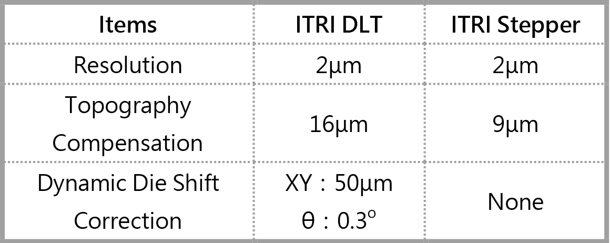

| 全球領先無光罩適應形圖案化補償技術 World Leading Maskless RDL Technology for Dynamic Die Shift Correction |
| 因應未來智慧場域裝置多樣及高階封裝應用需求，工研院開發 無光罩高解析適應形圖案化補償技術，驗證應用於晶片優先 (Chip First)封裝結構之重佈線層(Re-distribution Layer, RDL) 的適應形圖案化補償，達到水平位移(XY)50μm 與角度位移 (θ)0.3o 的補償能力，未來可應用於高階面板級封裝或次世代顯 示器。 ITRI has developed maskless technology for RDL Dynamic Die Shift Correction to meet the diverse requirements of high-end panel-level fan-out packaging for future smart devices. The pattern compensation from die shift has been achieved XY: 50μm & θ: 0.3o by using digital lithography technology (DLT) for panel-level packaging mass production.  |
| 技術洽詢聯絡人：吳胤璟 聯絡電話：03-5913685 E-mail：gary.wu@itri.org.tw |